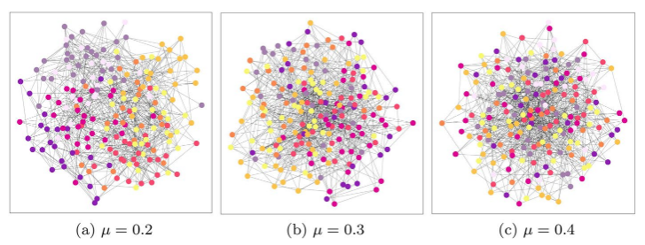

Towards Explainable Community Finding

Authors. Sophie Sadler, Derek Greene, Daniel Archambault
Venue. Applied Network Science (2022)
Abstract. The detection of communities of nodes is an important task in understanding the structure of networks. Multiple approaches have been developed to tackle this problem, many of which are in common usage in real-world applications, such as in public health networks. However, clear insight into the reasoning behind the community labels produced by these algorithms is rarely provided. Drawing inspiration from the machine learning literature, we aim to provide post-hoc explanations for the outputs of these algorithms using interpretable features of the network. In this paper, we propose a model-agnostic methodology that identifies a set of informative features to help explain the output of a community finding algorithm. We apply it to three well-known algorithms, though the methodology is designed to generalise to new approaches. As well as identifying important features for a post-hoc explanation system, we report on the common features found made by the different algorithms and the differences between the approaches.